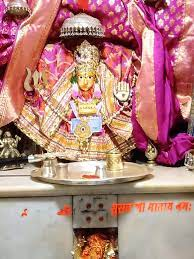

|  |
One thing important about the Surana’s is Maa Suswani. Maa Suswani are the Surana’s Kuladevata. A Kuladevata is basically a clan deity. Kula means Clan and Devata means deity.
Her main temple is located at Morkhana in Bikaner district of Rajasthan. The temple was built in the year 1173–74 AD, as per Archaeological Survey of India reports. Further, another inscription notes that the temple was repaired in the year 1518 AD by Surana Hema Raja.
She is worshipped as a Kuldevi of Surana, Dugar and Sankhla sub-clans of the Rajasthani Jain community.